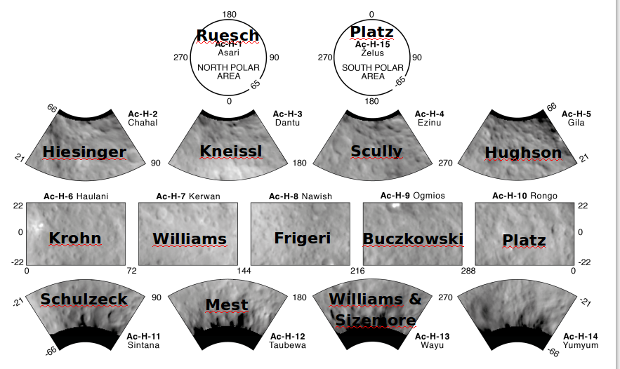
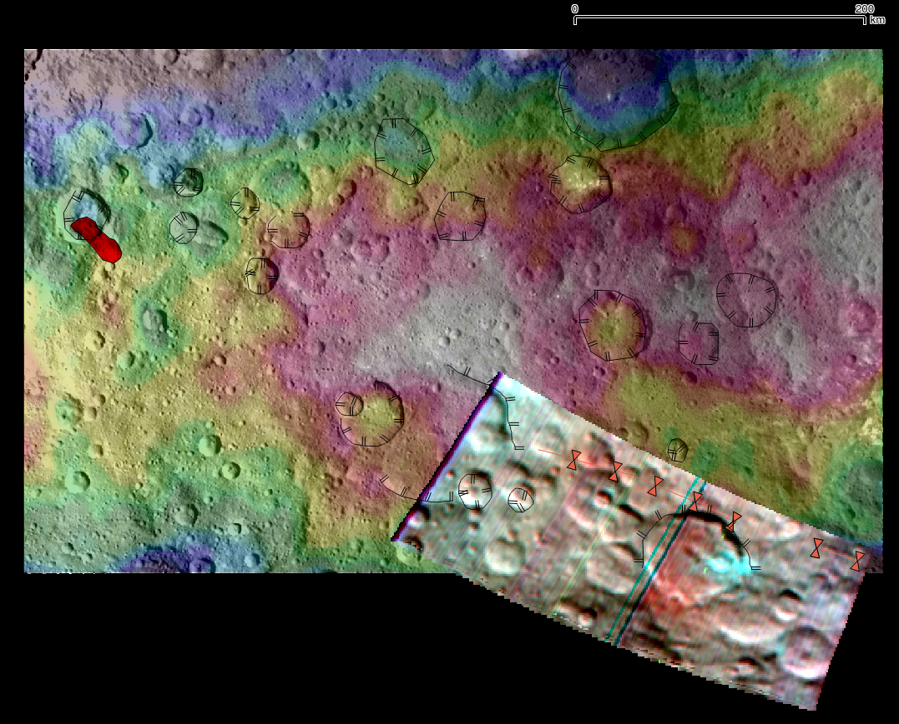

Geologic mapping of
Ac-08 Nawish
quadrangle on Ceres
Created by Alessandro Frigeri, VIR Team @ IAPS - Rome Italy
Ceres quads
15-tile scheme as Vesta

Data
- FC_SURVEY_V2: mosaic, dtm
- VIR: CSS
Pole axis: RA 291.410 DEC 66.790
PCK: dawn_vesta_ceres_dlr_v08.tpc = dawn_ceres_v04.tpc
Features mapped
- Faculae
- Labes
- Fossae
- Crater rim
VIR Data VIR_IR_1B_1_486875439_refl_1

Summary
- No unit mapped yet
- Faculae: use of VIR data